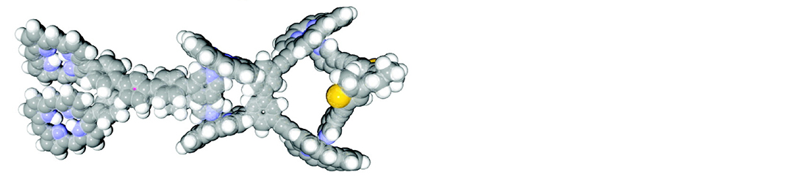

I developed functional molecules and materials based on organic chemistry.
Supramolecular machine
Proteins in the body function by coordinating the shapes of associating subunits in response to external stimuli. Inspired by that, we developed a synthetic supramolecular machine that coordinates the movement of associating units upon photoirradiation (H. Kai et al., JACS 2008).
Bioplastics

We developed bioplastics and nanofillers that strengthen them.